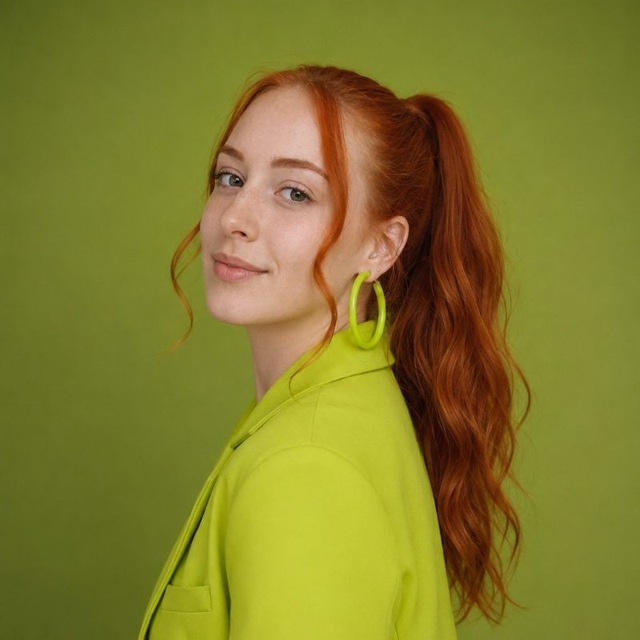
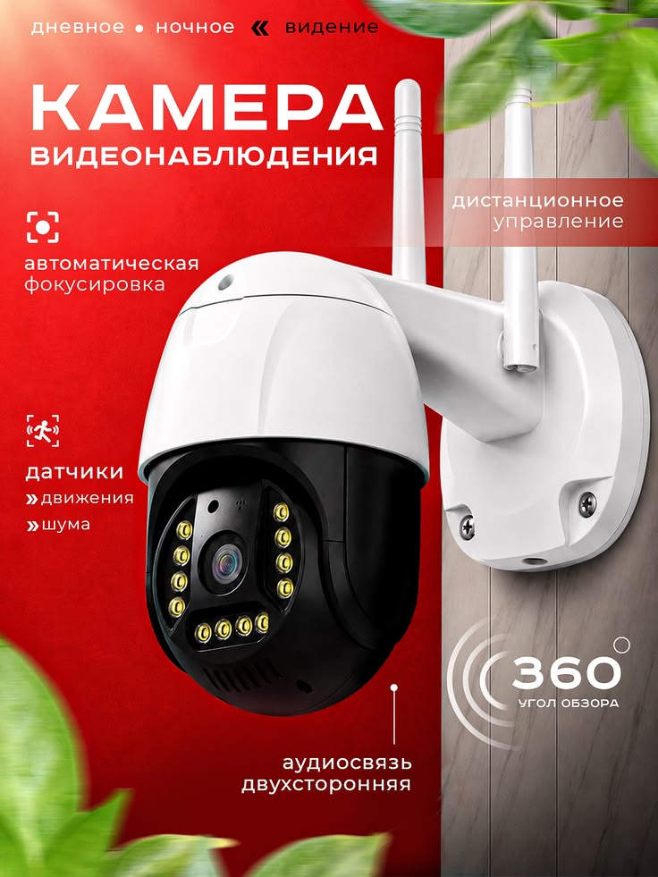
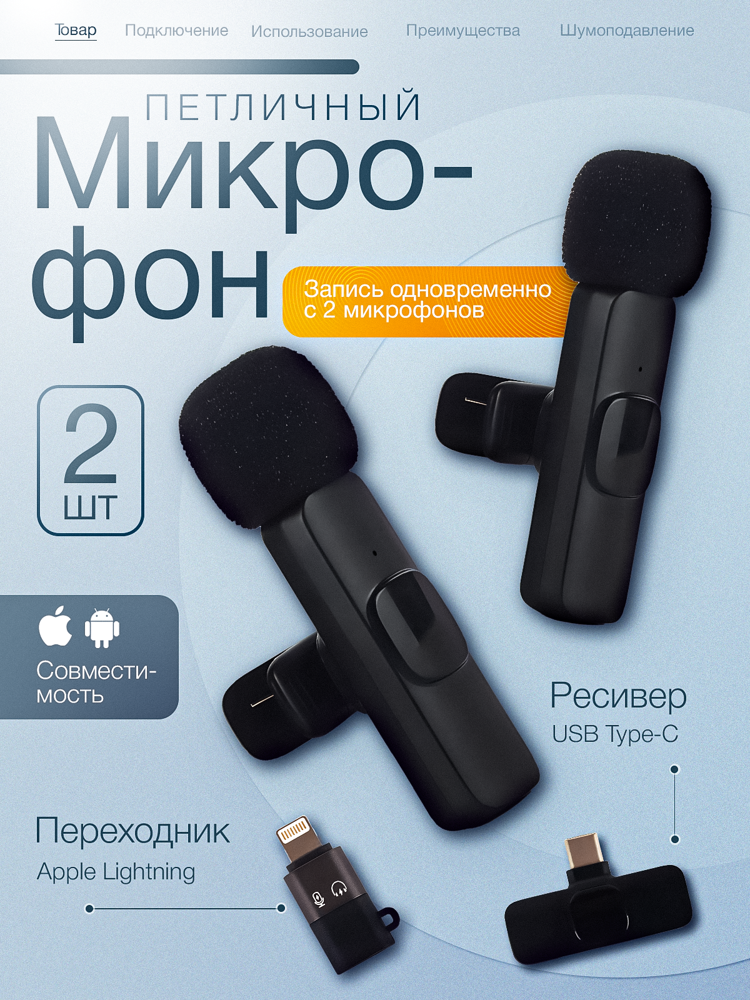
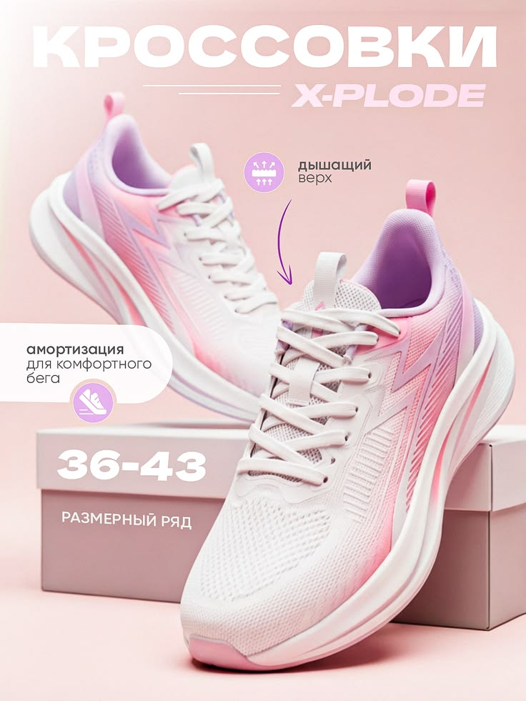
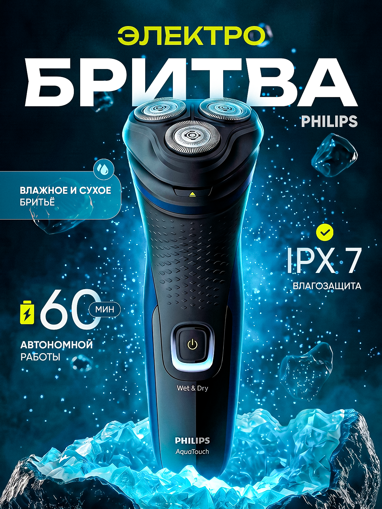
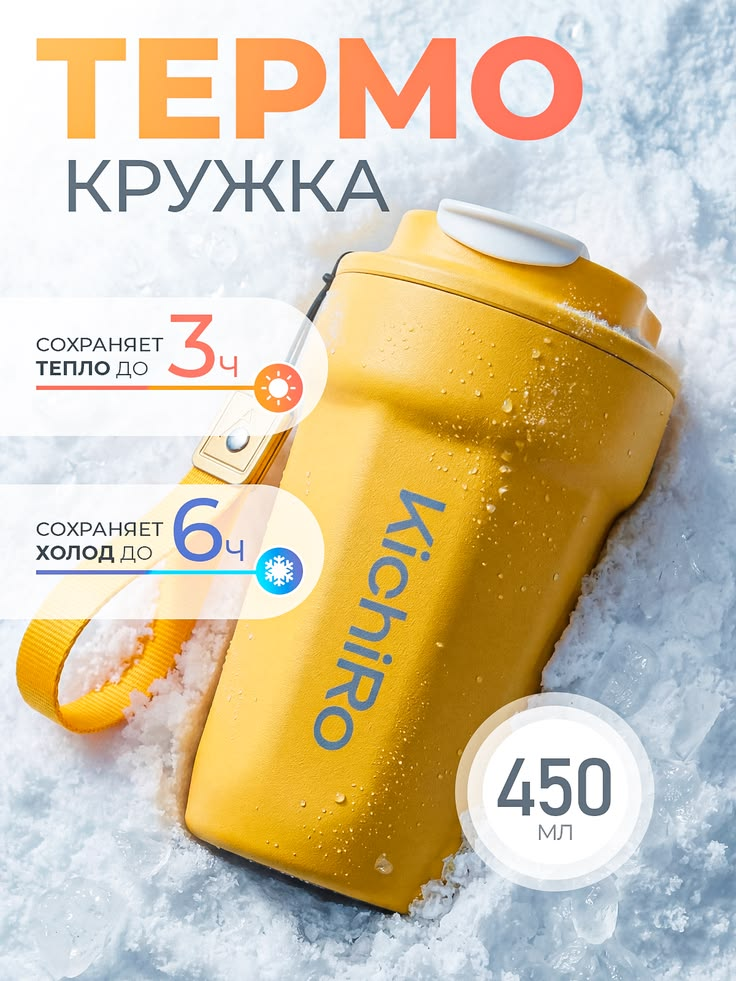
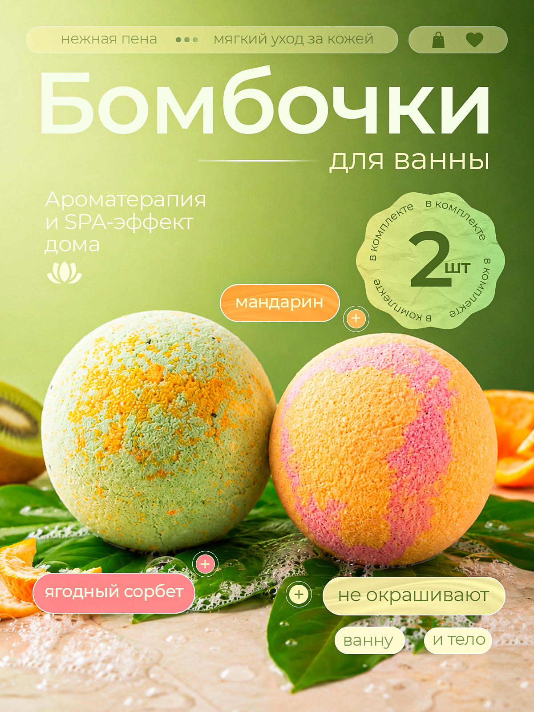
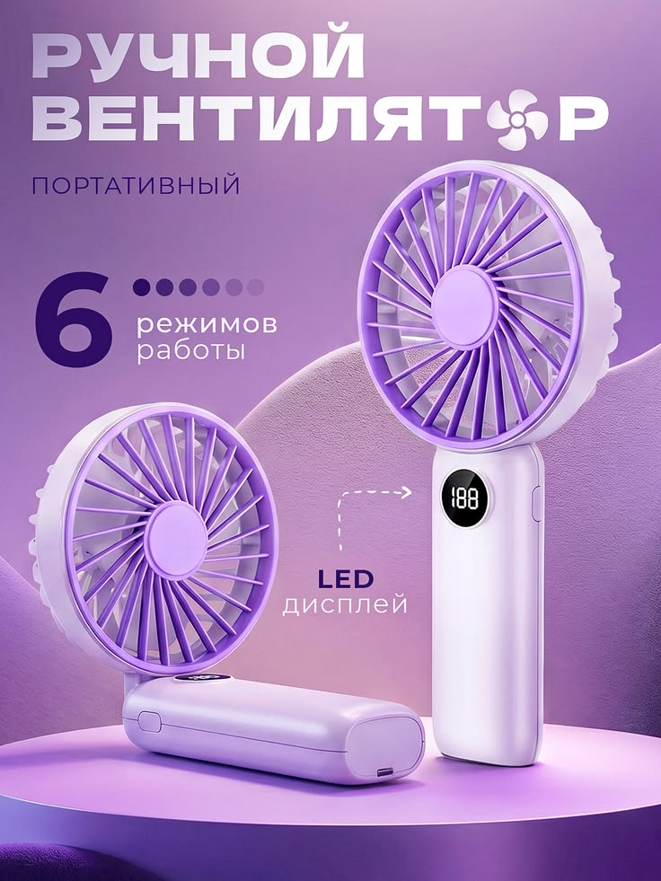
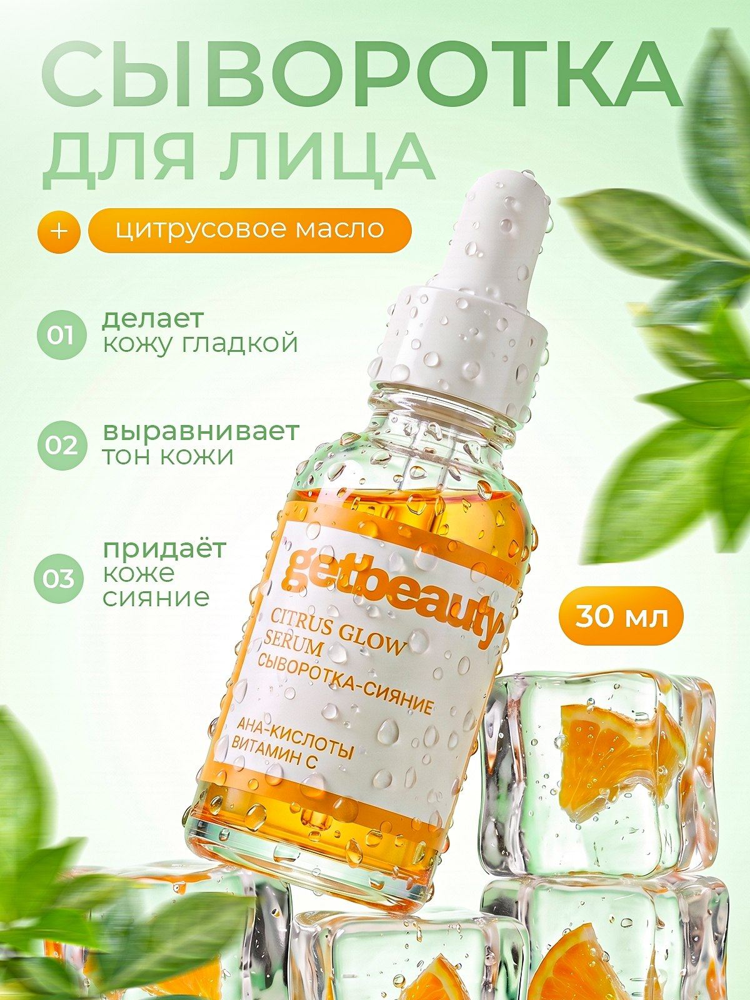

Смотрит на конкурентное поле
Анализирует конкурентов до того, как выбирать визуальные акценты.
Инфографика для карточек товаров: сначала анализ конкурентов и логика подачи, затем дизайн. Чтобы преимущества продукта считывались быстро, а карточка не выглядела «ещё одной такой же».

Почему именно Лиза
Её сильная сторона — соединить структуру и эстетику: понять конкурентное поле, расставить смысловые акценты и собрать из них цельную визуальную последовательность.
Анализирует конкурентов до того, как выбирать визуальные акценты.
Не набор отдельных слайдов, а последовательная подача преимуществ товара.
Photoshop, Figma и AI-инструменты — не ради эффекта, а как часть рабочего процесса.
Selected work
Несколько работ Лизы — от отдельных обложек и инфографики до более развёрнутых карточек товаров.








Все актуальные работы Лиза ведёт в Telegram. Сайт отвечает за быструю коммерческую презентацию, канал — за живое и полное портфолио.
Открыть портфолио в Telegram ↗Как строится работа
Процесс показывает, за что клиент платит кроме «рисования»: сначала понимание задачи, затем логика и только после — визуальная реализация.
Фиксируем продукт и то, что важно донести покупателю. Можно начать без готового ТЗ.
Лиза смотрит конкурентов и ищет, за счёт чего карточка может подавать товар яснее.
Определяются акценты и последовательность — что человек должен увидеть первым, что следующим.
Собирается финальный визуал. В заявленных условиях — срок 1–3 дня и 2 круга правок бесплатно.
Не нужно заранее придумывать композицию, стиль и структуру каждого слайда. Лиза работает как по ТЗ, так и без него.
Написать о задаче ↗About Liza
Работает с инфографикой и дизайном, использует Figma, Photoshop и нейросети. В её собственном позиционировании главный принцип сформулирован просто: проект — это сочетание структуры и эстетики.
«Каждый проект — это сочетание структуры и эстетики».
Перед стартом
Да. Можно работать и с ТЗ, и без него. Можно начать с самой задачи и продукта.
Как правило, срок выполнения 1–3 дня.
2 круга правок бесплатно.
Да, она использует нейросети среди рабочих инструментов вместе с Photoshop и Figma.
Следующий шаг
Не нужно писать идеальный бриф. Откройте Telegram, отправьте Лизе задачу и начните диалог с того, что есть сейчас.